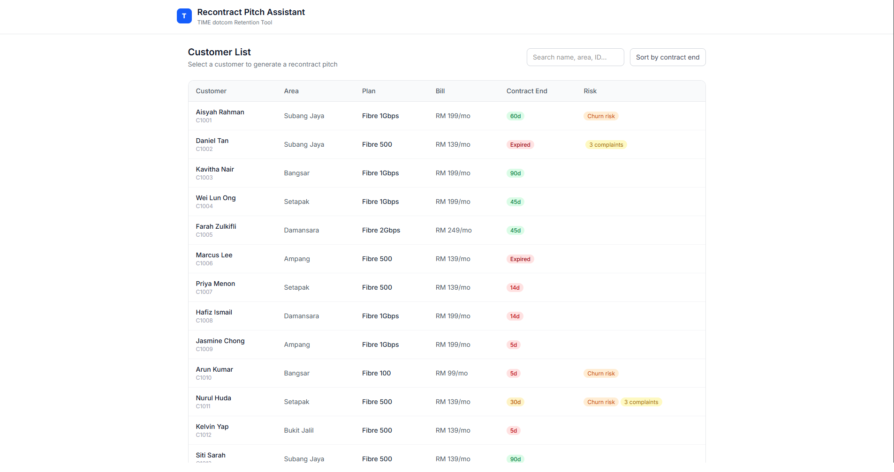

AI Customer Retention Assistant

The Problem
Customer success agents often rely on generic scripts when trying to recontract customers. Writing highly personalized pitches manually takes too long, but relying on raw AI chatbots often results in unstructured, unusable blocks of text that disrupt the call flow.
The Solution
I built a full-stack tool that automatically analyzes a customer's usage profile, payment history, and churn risk, and generates a structured, 4-part pitch (Recommended Plan, Offer Hook, Talking Points, Rationale) in under 5 seconds.
The system utilizes a responsive React frontend deployed on Vercel and an asynchronous Python backend on Railway, providing agents with actionable insights without slowing down their workflow.
Key Engineering Decisions
-
Zero-Parsing Errors
Instead of relying on prompt engineering to get valid JSON, I utilized Gemini's native
response_schemacombined with Pydantic validation. If the LLM invents a plan that doesn't exist, it is rejected at the API layer before it ever reaches the database, completely eliminating LLM parsing errors and downtime. - Asynchronous Architecture Because LLM calls are heavily I/O bound (taking 3-5 seconds), I built the backend using FastAPI and async SQLAlchemy (asyncpg). This ensures the database and server remain non-blocking and can handle high concurrency without crashing.
- Built for Unpredictability LLM APIs are prone to rate limits and timeouts. I implemented custom exponential backoff loops for 429 (Rate Limit) errors, while forcing 503 (Timeout) errors to fail fast so the UI doesn't lock up for the user.
- Human-in-the-Loop Feedback Designed a feedback mechanism stored in Supabase/PostgreSQL to track AI pitch acceptance rates, establishing a continuous data pipeline for automated prompt tuning.